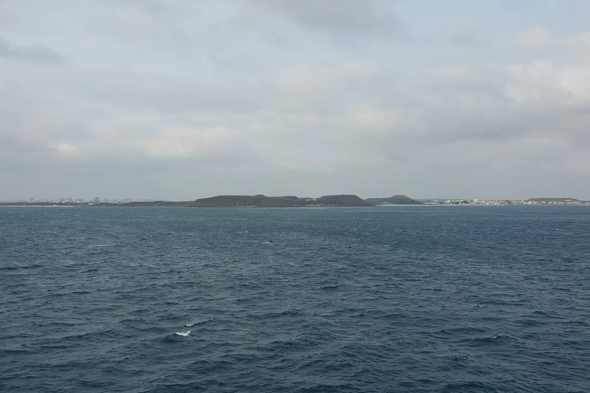
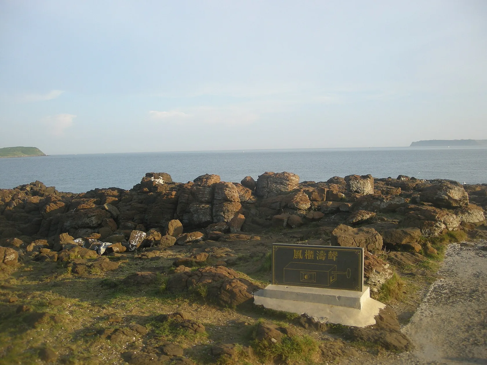
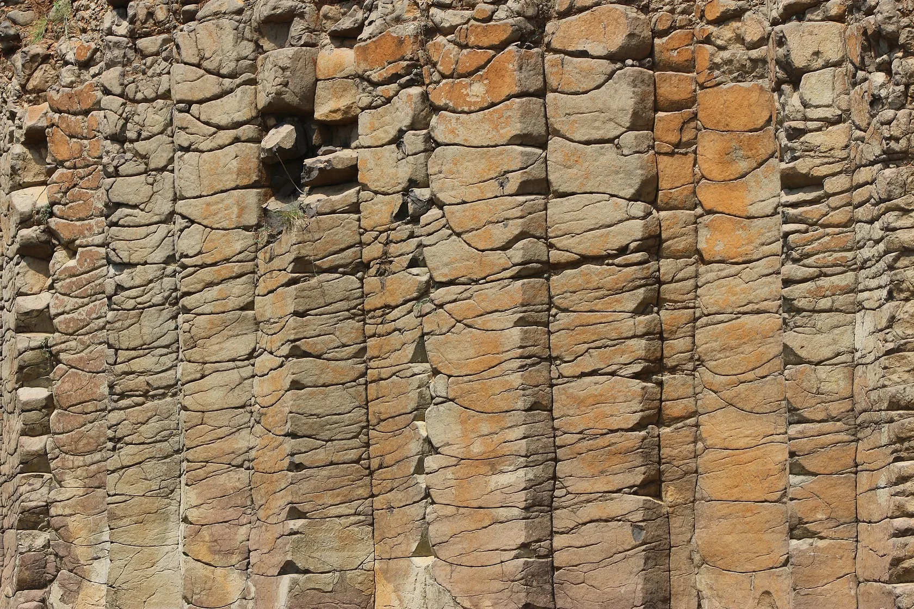
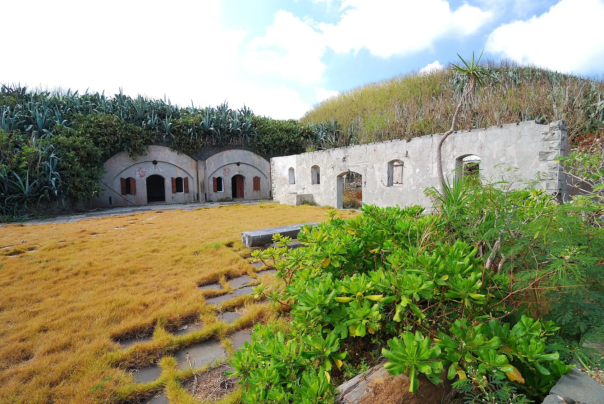
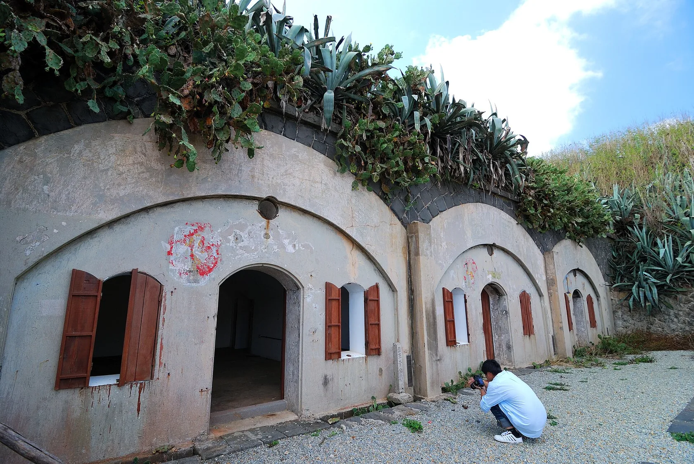
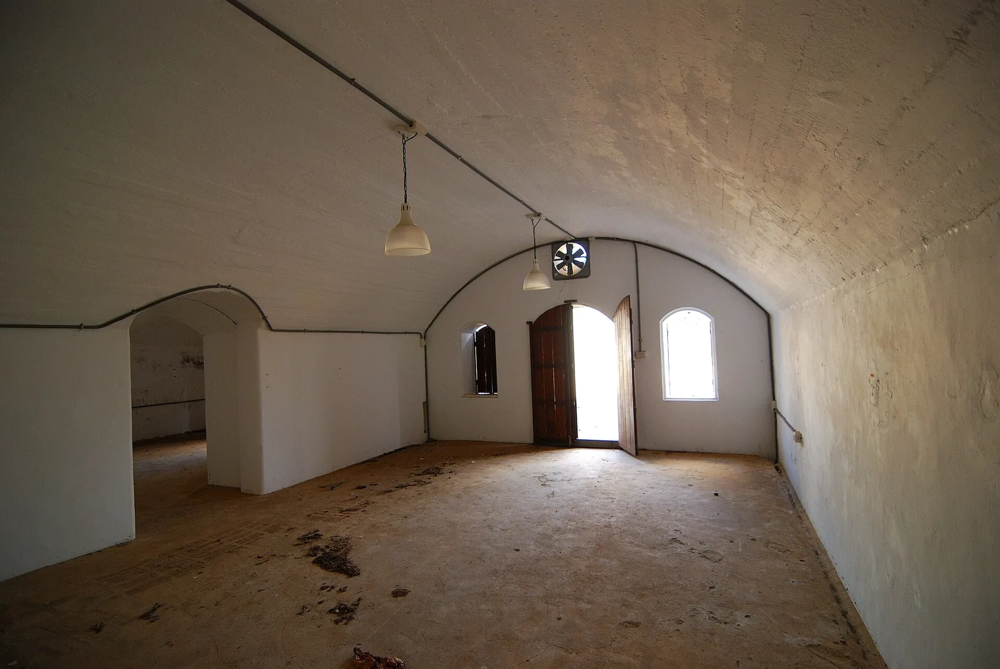
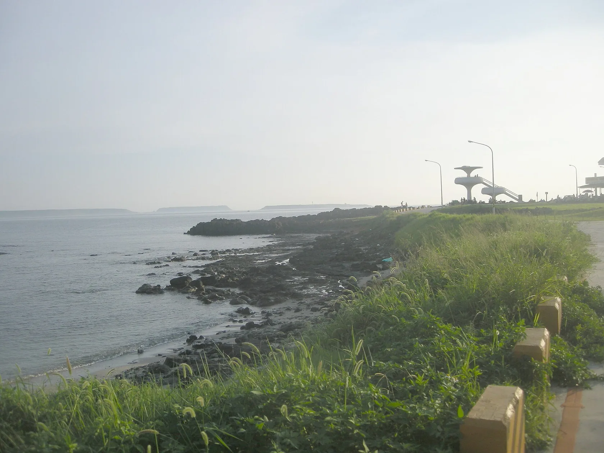

After the Battery
Military Heritage, Landscape & Post-Military Transformation
Historical interpretation below draws on published studies. The photographs are separate visual records, dated and credited individually; they do not constitute an independent survey of the site's condition in 2024 or 2026.
The disappearance of a military function does not erase the landscape built to sustain it. At Dashan, fortification, ecology and later public use remain entangled.
The remains of Dashan Fortress Battery occupy a coastal headland on Penghu’s Fenggui Peninsula. Gun emplacements, concealed chambers, stone retaining walls and drainage channels survive within a landscape of basalt outcrops, coastal vegetation and expansive sea views. What now appears as a collection of ruins was once an organised military environment, shaped by the need to observe, defend, supply and occupy a strategic coastline. [P1]
The site's history extends beyond its original military function. Successive administrations modified the structures, while the withdrawal of military activities brought the surrounding land into the domains of tourism development and heritage conservation. These overlapping histories make the former battery a useful case for examining how military infrastructure becomes a cultural asset—and how competing expectations are placed upon the same ground. [P1] [P2]


Research question
How do the physical remains and changing uses of a coastal fortress reveal the transition from military occupation to heritage conservation and public landscape?
An island at the crossroads
Situated in the Taiwan Strait, the Penghu Archipelago has long occupied a strategic position between Taiwan and the Chinese mainland. Its harbours, maritime routes and coastal elevations made the islands important to successive military powers. The Fenggui Peninsula illustrates the relationship between geography and defence: elevated ground overlooks the southern approaches to Magong Harbour, while the narrow peninsula connects the inner bay to open sea. [P1]
Military activity in the wider area predates the surviving fortress. Historical accounts associate the peninsula with defensive works during the Ming–Zheng and Qing periods. The principal structures visible today, however, belong to later construction phases. Regional military history therefore cannot be used to date every surviving wall. The distinction between a strategic location and the age of its material remains is central to reading this landscape. [P1]




A fortress built in stages
Dashan Fortress was constructed between 1900 and 1902 as part of the Japanese military’s Penghu Island Fortress system. It was the first battery completed under that programme and was equipped with four British-made Armstrong 10-inch guns acquired during the Qing period and subsequently reused by the Japanese military. [P1] [P2]
Military technology and strategic requirements continued to change. Work on an additional battery began in 1920, but the planned expansion was interrupted by fortification restrictions associated with the Washington Naval Conference. Following the Second World War, the Republic of China armed forces reused and altered portions of the site. The surrounding area subsequently formed part of Qingwan military camp. [P1] [P2]
| Period | Documented change |
|---|---|
| Before 1900 | Earlier military importance of the Fenggui Peninsula; not all surviving fabric dates to these periods. |
| 1900–1902 | Construction and completion of the Japanese-period Dashan Fortress Battery. |
| 1920s | New battery works initiated, then curtailed amid restrictions on fortification. |
| After 1945 | Continued military occupation, modifications and later use as part of Qingwan camp. |
| 2000s–2010s | Withdrawal from military use, tourism planning and designation as a historic monument in 2010. |
The surviving fabric thus documents multiple occupations rather than one intact historical composition. Material differences, altered openings and equipment foundations can be read as evidence of successive decisions and interruptions. [P1]


The infrastructure behind the guns
The battery’s architectural significance extends well beyond its artillery positions. The 2014 architectural investigation categorises its facilities into three interconnected systems: combat space, living and support space, and communication and circulation infrastructure. Artillery platforms, observation posts and command chambers were positioned for defence and visibility. Shelters, ammunition facilities and protected routes supported operations; barracks, kitchens and other service facilities sustained daily life. [P1]
| System | Representative remains and functions |
|---|---|
| Combat / observation | Gun positions, parapets, observation and command posts, ammunition facilities. |
| Habitation / support | Shelters, barracks, storage, kitchens, water supply and sanitation. |
| Communication / movement | Connecting paths, military roads and service infrastructure linking dispersed positions. |
Particularly revealing is the fortress’s water system. Surface runoff and rainfall were channelled through collection, sedimentation and filtration facilities towards underground storage. Water supply and drainage were integrated with the terrain, demonstrating how military occupation depended on environmental management as well as armament. [P1]
This infrastructural reading challenges the image of a coastal battery as merely a series of weapons positions. It was an inhabited and serviced environment, organised around shelter, movement, logistics and the management of scarce resources.




Material traces and altered ground
Dashan preserves evidence of changing construction practices. Early walls and drainage channels employed carefully cut stone masonry associated with Japanese fortification techniques. Some stones retain carved markings discussed in the architectural investigation in relation to construction labour. Later concrete additions, reconstructed parapets and altered surfaces sit beside earlier work. [P1]
Removed doors, damaged roofs, obstructed drains and overgrown passages record different kinds of change. Some features were altered during later military occupation; others deteriorated after use ceased or were modified for new activities. The conservation reports document both surviving structures and losses, making it possible to distinguish historical fabric from later intervention. [P1] [P2]
Not every absence calls for a reconstructed original. Equally, deterioration is not itself a guarantee of authenticity. The historical record must account for what survives, what was changed, what disappeared and what remains uncertain.
From military ground to tourist landscape
After the withdrawal of military activities, Qingwan became the subject of government-led tourism planning. A 2006 feasibility study considered the area’s potential as a cactus-themed park. Its SWOT assessment identified the coast, varied terrain and established vegetation as assets, but also described seasonal winds, steep slopes, land transfer and investment viability as significant constraints. [P3]
Subsequent proposals combined ecological restoration, visitor facilities, recreation and private-sector participation. In parallel, Dashan Fortress Battery was designated a county-level historic monument in 2010, giving its military remains an explicit conservation status. [P1] [P2] [P3]
These processes placed two different ways of valuing the same land alongside one another. Tourism planning emphasised accessibility, landscape appeal and economic feasibility; heritage assessments focused on historical integrity, repairs, carrying capacity and maintenance. They could overlap, but their priorities were not automatically identical. The former military site was becoming a public destination while its historical structures continued to require protection.


The National Cultural Heritage Database holds a more detailed 2024 photographic inventory of the four gun emplacements, observation posts, shelters, masonry and drains. Consult the official visual archive ↗. Those images are not reproduced here because their digital-object record restricts reuse to viewing on the original platform.
Preserving a difficult inheritance
Military heritage raises questions that extend beyond the physical survival of a building. Fortifications embody histories of territorial control, military authority and conflict, while also preserving knowledge of engineering, logistics and everyday life. Their value cannot be reduced either to military achievement or to picturesque ruins.
The fortress investigation and adaptive-reuse assessment called for retention of the wider military landscape, restrained development and attention to drainage, weathering, vegetation, structural condition and safe access. They treated the relationships among the batteries, sheltered spaces, routes and coastal terrain as part of what deserved conservation. [P1] [P2]
Heritage interpretation also participates in the construction of local identity. Wang Kuo-yu’s study of Penghu museums describes the challenge of moving beyond familiar images of the islands towards more layered accounts of maritime history and everyday culture. The military landscape belongs to this wider cultural history, even if it is less readily assimilated into conventional tourist imagery. [P4]
Fu Chao-ching’s discussion of heritage translation places conservation, reuse and interpretation in a broader debate about the future life of historic places. Read alongside the Dashan reports, it provides a conceptual context for understanding why preservation involves not only keeping physical remains but also making their histories publicly intelligible—without implying that any particular new design is the necessary outcome. [P5]
What remains after the battery?
Dashan illustrates how the significance of infrastructure changes when its original function disappears. Elevated ground once used for coastal surveillance can become a viewpoint; protected circulation routes become historical evidence; stonework and drainage channels remain after the routines they supported have ended.
The transition from military occupation to public heritage, however, is neither automatic nor complete. It depends on decisions about land use, investment, conservation, access and which histories are made visible. The site’s afterlife is therefore not simply a progression from abandonment to revitalisation. It is an ongoing negotiation among military remains, coastal ecology, public memory and the economic ambitions attached to former defence land.
The battery did not disappear when the guns fell silent. Its landscape continued to be used, interpreted and contested.
The evidence assembled here comes primarily from published architectural investigations, conservation assessments and planning studies. It should not be mistaken for an independent measured survey, archaeological investigation or current-condition audit. Those would be needed to establish the precise state of individual structures today.
References
- P1 / Architectural and historical investigation
楊仁江建築師事務所 (2014). 澎湖縣縣定古蹟馬公大山堡壘砲臺調查研究.
Commissioned by 澎湖縣政府文化局. Principal evidence for historical phases, fortress architecture, spatial systems, stonework, water infrastructure and conservation conditions.
- P2 / Heritage conservation assessment
澎湖縣縣定古蹟馬公大山堡壘砲臺因應計畫.
Sections on cultural significance, adaptive-reuse suitability, hazards, structural condition, accessibility and long-term maintenance.
- P3 / Planning and feasibility report
怡興工程顧問有限公司 (2006). 澎湖國家風景區仙人掌公園用地選址及營運方式評估規劃：成果報告書.
Commissioned by 交通部觀光局澎湖國家風景區管理處. Site evaluation, Qingwan SWOT assessment, tourism planning and implementation considerations.
- P4 / Museum and local identity research
王國裕 (2009). 從三座澎湖博物館籌建經驗解讀澎湖文化論述與建構.
國立臺南藝術大學. Discusses museums, local knowledge, maritime culture and public understandings of Penghu’s heritage.
- P5 / Heritage interpretation
傅朝卿 (2022). 轉譯作為文化遺產永續發展的新契機.
臺灣建築學會會刊雜誌, October 2022. A conceptual discussion of restoration, adaptive reuse and heritage translation.
Photographic sources & reuse
The seven photographs are served locally as optimized WebP files; the caption of each image links to its individual Wikimedia Commons file record, where the photographer, date, licence and original file can be independently verified. The photographs of the battery are from 2012 (Mimicat1531) and a 2025 seaward view (Sin-siōng). Contextual photographs of Fenggui and regional basalt come from separate locations and are labelled accordingly. Images were resized and recompressed for faster loading, without cropping or retouching. Click any image to enlarge it.
Wikimedia Commons · Dashan Fortress photographs ↗ National Cultural Memory Bank · restricted-access image record ↗